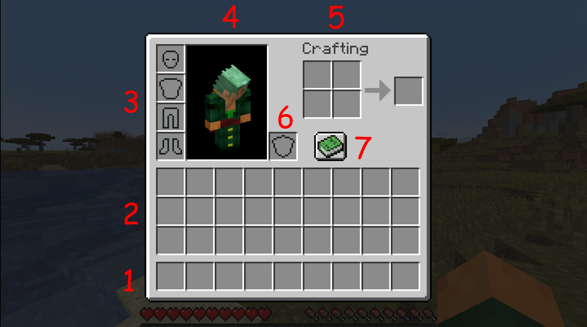

Congratulations and welcome in the world of Minecraft !
You actually spawn in a random world and the first thing you should do is changing the keys to move in the settings.
Perhaps the Auto-Jump will be activated, this option can be removed, it's up to you.
Information on the screen:
On your screen, there are different kinds of bars at the bottom of the screen, let's explain its:
- Stuff bar, you change the slot by scrolling your mouse or with keys numbers on your laptop.
- Health bar, if this bar reach to 0, you are dead.
- Food bar, if this bar is at the maximum, you will earn some hearts. Eat food to fill the bar. If the bar reach to 3, you will not able to sprint.
- Your hand, you can change you hand in the options.
- Experience bar, allows you enchant tools. You earn XP by killing mobs, feeding passive mobs and trading with villagers.

By clicking on the key E, your inventory will open:
- Stuff bar.
- Inventory, you can move the items beteween each others and put its on the stuff bar.
- Armor slot, you can create piece of armor to increase your abilities.
- Your skin
- Little crafting table, in Minecraft, everything is on crafting stuff, with this square 2*2, you can create items and unlock new items !
- Left hand slot, you can put a item on your left hand.
- Help for receipts to craft stuff.
Now, you are able to start !
Try to find a tree and by maintening the left click on it, break the trunk of tree.
When it will be break, a little item of the trunk that you have broken before will appear, you are able
to have it by move you character on it.
One block of wood is now on your stuff bar.
By putting one piece of wood on the little crafting table, you can have 4 pieces of planks.
Combine this 4 planks together and craft your first item, crafting table !
Put the crafting table in your hand and do a right click on a block, the crafting table will appear in front of you like a block, do a right click on it to open it.
It has the same utility as the little crafting table, but
it has a square of 3*3. Now you can craft everything in Minecraft ! Let's start with basic tools.
To create tools, you need some sticks with planks. You will find on the image of all tools available with their craft.
To go further, wooden stuff are not very good because they don't have a good efficacity and durability.
You can have tools in stone, iron, gold, diamant and netherite. Now we can mine some stone to upgrade our stuff !
By crafting a wooden pickaxe, you can mine stone and craft stone tools. By the way, you can also craft a furnance with cobblestone. A furnance allows you to smell items to unlock new ones. You need a combustible like wood, coal or lava.
By going into caves, you can find some coals, and create torchs. Torch generates light and enable the spawn of hostile mobs around the torchs.
You food bar start to decrease, let's find a way to fill it !
Find a passive mob like a pig, cow or sheep. Use a axe or a sword to kill it and catch the loot.
Put the food on the furnance and cook it with the coal (or
something else). You earn cooked food ! Maintain right click to eat it.
You can find some structures in your world. Here it's a dungeon with a spawner of hostile mob and two chests with loots.

Hostiles mobs appear at night and in the cave (where there is no light). They will attack you in any case. Try to kill them with tools like a sword, axe or bow.
In the image, there is a Creeper, a mob who will exploded itself when it is near of you. Be careful !
Iron will help you to have a good stuff as unlocking new items such as a bucket, you can have iron tools and a good armor !
This are the receipts to craft each piece for the armor. A new bar appear above your health bar.
With a full iron armor set, the bar is not full because diamond armor and netherite armor are better.
You now have the basic to play in Minecraft !
But this is not finish, you still have to beat the Ender Dragon the final boss...
To do that, scroll the carousel to have a overview of what you have to do.